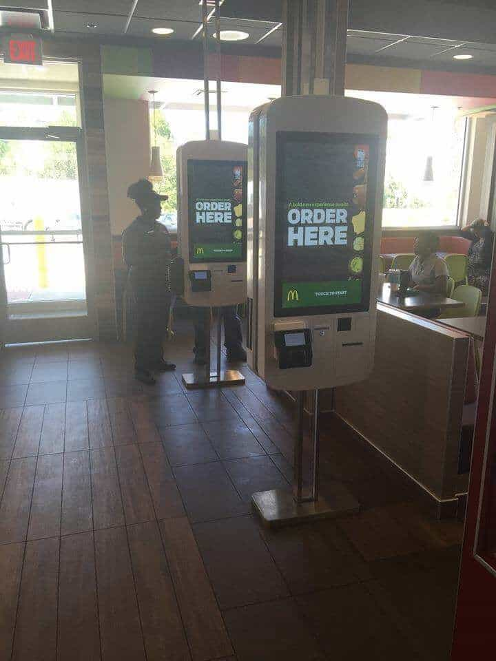
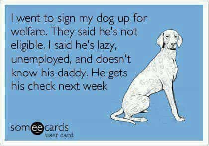

Luke Stranahan is an engineer by trade and an armed patriot by inclination. He writes for Return of Kings as a leisure pursuit and an attempt to do his part to help reverse the slide into moral decrepitude of modern society. Follow him on Twitter.


As the progressives have increasingly pushed the 15 dollar per hour federal minimum wage, and with California already at $10/hour and rising to $15/hour, fast food corporations have been anticipated to pursue alternative methods to maintain profitability. Wendy’s recently announced that they will rolling out self service kiosks in the latter part of 2016 across the US. Technological advances and other sea-changes in society often reveal truths about our world, and the discerning man will find this no exception.
Although the pictures of the McDonald’s kiosks in Asia have been making the rounds on Facebook and similar recently with pithy predictions of liberal comeuppance, this is the first news of this employee headcount reducing technology coming to fast food in the US. Self service checkouts have been around in Wal-Marts and similar for years offered as an alternative to express checkouts, but these are deliberately designed to replace, not augment, workers, and that’s a different ball game entirely.
The free market is an interesting animal and responds in ways unpredictable to some. It is a symptom of the megalomania of Barack Obama and others in federal and state governments that they think they can regulate free market capitalism and make it do their bidding. If you have a river, and you want to make some power, you can dam it up and run it through some turbines to a certain extent, but, if you restrict the flow too much, the river will find an easier path in which to do so, and that is what is happening here.
The technology of the self service kiosk is the same thing as ATMs and self checkout machines and has been around for a while. It hasn’t been implemented into fast food joints because it probably wasn’t economically viable to pay the initial costs, the upkeep, and the costs of maintenance employees versus paying minimum wage to the cashiers.

Raising the minimum wage is not going to actually raise the wages of fast food cashiers at all. You can’t impose a value on a job (and thus, its wages); the value of the job is what it is. In the past, when the minimum wage has been raised, the whole economy has shifted to make the new minimum wage the floor again and left minimum wage earners with more money that was worth correspondingly less.
I don’t think that will happen this time. I believe the entry level cashier position is on the way out across the board. A quarter pounder will still cost a couple bucks, and the cashier job will still be worth some seven bucks an hour, but it will be paid against an expense line of buying that kiosk on a budget, not to a paycheck.
Raising (doubling) the minimum wage will make all cashier jobs financially unfeasible, and we should look forward to a lot less errors in our orders at Taco Bell because of this. I believe that the determining factor of whether or not someone should be employed in a job versus a machine doing it will become if it is physically possible for a machine to do the job versus if it is financially feasible to do so.
Taking your typical fast food joint, these kiosks will replace the cashiers running the lobby, and eventually, once voice recognition or the format of the touchscreens get tuned in, probably the drive through cashiers, too. I don’t doubt that automated assembly and cooking machines are too far behind, either.
The ultimate evolution of this concept is that a fast food joint will have two employees per shift to replenish the cooking machines, hand out the food, and troubleshoot basic mechanical problems. Someone else will come along daily to remove the money from the kiosks.
People who formerly had these jobs will be out of work and will find they are faced with the harsh truth that, while the minimum wage has increased, the skills required for the jobs have also increased. Working at Taco Bell may require an industrial maintenance degree and relevant experience, which would, in a semi-ironic fashion, fix the whole problem with people trying to create a career out of burger flipping by forcing them to ass-up and get some skills for a real job, which is what they should have done in the first place.
That amp clamp ain’t a sex toy.
But, there will only be one maintenance guy for every five burger flippers, and people are lazy, so we will end up with the following.
Normally, this situation would be self-correcting. If it is no longer viable to employ people at base level; then those people will not be employed and will have to find an alternative. They would either find a job that their skills could secure for them, level up their skills so that they could then secure a job with them, or mooch off family members in either a temporary or permanent manner.
However, being a semi-socialist country, most of them will simply go on welfare and make the rest of us pay for them. Public assistance has always been a parasite on great civilizations and contributes to their eventual, and inevitable, downfall. It sounds like such a good idea to help the poor out when you can’t understand the role of laziness in human psychology or basic math and how it impacts an economy.
Being on welfare should be shameful, and the fact that it is not is indicative of the problems in our societies. Part of our platform of neomasculinity is the concept of being skilled and providing for yourself. You need to learn a trade and have a work ethic. A basic high school education and a worthless “Choose-You-Own-Degree” College of Arts And Crafts bachelors in the courtship rituals of Victorian England along with a complete lack of grit from never having done anything in your life will leave you unprepared for ANY job.
The jobs are there. The pay is there. Most people are just unqualified and unmotivated; just ask Mike Rowe.
I’m an engineer, not a sociologist, so I’m not going to speculate on how race and religion affect work ethic, education, and productivity, but I don’t think it’s a race or religion or orientation thing. Rather, the problem with people in the US, and probably other countries as well, is that they are simply lazy.
I work in a car factory, and I can do any job the guys on the line can do; the jobs aren’t that complicated. However, I would never make the cycle time of the line because I wouldn’t be fast enough to finish my job on one car before the next one came piling in. Eventually, I could train up to be as fast as they are, but they work hard for their money and deserve it, just like I deserve mine by doing what I do.
I think we are going to see, as more and more people get on and abuse welfare, a dissatisfaction with lazy people begin to grow. Shaming will become the powerful force that it used to be, and worthless will become an insult again. I think this will occur regardless, but whether or not it happens before an economic collapse or after remains to be seen.

I believe that this minimum wage hike is going to disrupt the economy of the US similar to the problems of 2008 with the recession. In that recession, the economy downsized and laid off millions. It has since recovered profitability, but on a smaller scale, and many of those people that were laid off are still unemployed, and will perhaps remain permanently so. Those people are outside the economy as a casualty that was expendable to fix the situation.
Raising the minimum wage will do the same thing. Jobs that aren’t worth the wage increase that can be replaced by technology will be replaced by that technology, and those people will be out of work. They will either have to level up, or remain unemployed. Part of making a good sports team is cutting the bad players. Our job is to make sure that we have marketable skills so that we’re in demand, and that we teach that work ethic and necessity of skill to our children.
Read More: The Real Reason Minimum Wage Must Be Raised To $15 An Hour